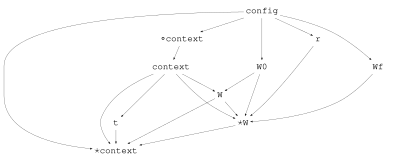
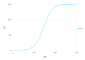

From an Equation to a Cropbox Model
This tutorial translates a logistic growth equation into a Cropbox specification, configures a scenario, runs the model, and examines the result. It follows the equation-to-model sequence used in Cropbox courses and workshops.
Start from the process equation
Let whole-plant biomass $W$ follow logistic growth:
\[\frac{dW}{dt} = rW\left(1 - \frac{W}{W_f}\right), \qquad W(0) = W_0.\]
Before writing code, identify the role and behavior of every symbol.
| Symbol | Meaning | Cropbox role |
|---|---|---|
| $r$ | relative growth rate | configurable value preserved during a run |
| $W_f$ | potential final biomass | configurable value preserved during a run |
| $W_0$ | initial biomass | configurable initial value |
| $W$ | current biomass | state accumulated from its growth rate |
This semantic inventory is the bridge between an equation and the model DSL.
Specify the model
using Cropbox
using DataFrames
@system LogisticGrowth(Controller) begin
r: growth_rate => 0.05 ~ preserve(parameter, u"g/g/d")
Wf: final_biomass => 300 ~ preserve(parameter, u"g")
W0: initial_biomass => 0.25 ~ preserve(parameter, u"g")
W(W, r, Wf): biomass => r * W * (1 - W / Wf) ~ accumulate(init = W0, u"g")
t(context.clock.time): time ~ track(u"d")
endMain.LogisticGrowthRead the main state declaration from left to right:
W(W, r, Wf)names the state and its dependencies. IncludingWexpresses recurrence through theaccumulatebehavior.: biomassprovides a descriptive alias.- the expression after
=>computes the current growth rate; accumulate(init = W0, u"g")integrates that rate over simulation time, starting fromW0and storing biomass in grams.
The declaration focuses on meaning and behavior. Cropbox derives the dependency graph, update order, state types, and update routines from it.
Inspect the specification
Check the configurable surface before building a scenario.
parameters(LogisticGrowth)Config for 1 system:
| LogisticGrowth | ||
| r | = | 0.05 d^-1 |
| Wf | = | 300 g |
| W0 | = | 0.25 g |
Use look for the complete declaration or one variable.
look(LogisticGrowth, :W)[doc]
[code]
W(W, r, Wf):biomass => r * W * (1 - W / Wf) ~ accumulate(init = W0, u"g")Cropbox.dependency exposes the graph Cropbox uses to order declarations and update stages:
d = Cropbox.dependency(LogisticGrowth)
println(repr(MIME("text/plain"), d))
nothing[config → r → Wf → W0 → ∘context → context → W → ⋆W → t → ⋆context]The text form gives the generated update order. The SVG below is written directly from the same graph object:
Cropbox.writeimage("logistic-dependency", d; format = :svg)
Direct writeimage output from dependency(LogisticGrowth). Generated stages such as ∘context, ⋆context, and ⋆W remain visible because this is the actual scheduling graph rather than a redrawn scientific summary.
Configure a scenario
Defaults make the model runnable, but an external configuration keeps the scientific specification separate from a particular experiment.
config = @config (
LogisticGrowth => (
r = 0.05,
Wf = 300,
W0 = 0.25,
),
Clock => :step => 1u"d",
)Config for 2 systems:
| LogisticGrowth | ||
| r | = | 0.05 d^-1 |
| Wf | = | 300 g |
| W0 | = | 0.25 g |
| Clock | ||
| step | = | 24 hr |
The system type keys allow Cropbox to validate parameter names and units while the configuration is created.
Run the simulation
Request an explicit index and target so the output contract is clear.
result = simulate(LogisticGrowth;
config,
stop = 300u"d",
index = :t,
target = :W,
)
first(result, 5)| Row | t | W |
|---|---|---|
| Quantity… | Quantity… | |
| 1 | 0.0 d | 0.25 g |
| 2 | 1.0 d | 0.26249 g |
| 3 | 2.0 d | 0.275603 g |
| 4 | 3.0 d | 0.28937 g |
| 5 | 4.0 d | 0.303825 g |
The model updates at Clock.step. The returned DataFrame includes the initial state and subsequent daily snapshots through the stop time.
Visualize growth
visualize(result, :t, :W; kind = :line)
The S-shaped curve is not encoded as plotting logic. It emerges from repeated simulation of the specified biomass rate.
Compare with observations
Evaluation uses the same specification and configuration. Here a small data set stands in for measured biomass.
observations = DataFrame(
t = [0, 100, 200, 300]u"d",
W = [0.25, 33, 284, 300]u"g",
)
evaluate(LogisticGrowth, observations;
config,
index = :t,
target = :W,
stop = 300u"d",
metric = :rmse,
)1.696962000939863 gcalibrate extends this step by searching bounded parameter ranges. Keep the data used for calibration separate from independent validation data; see Evaluate and Calibrate Models for the full workflow.
Continue
- DSL Syntax explains every declaration component.
- Configure Models and Scenarios covers merging configurations and parameter sweeps.
- Run Simulations and Shape Output covers stopping, snapshots, and output selectors.
- Weather-driven Phenology adds calendar time and tabular weather input.